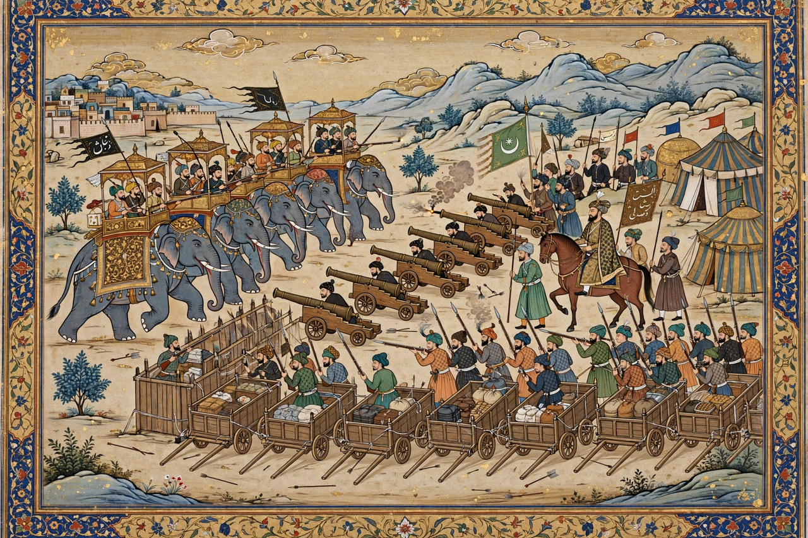

| First Battle of Panipat | |
|---|---|
| Date | 21 April 1526 |
| Location | Panipat, present-day Haryana, India |
| Result | Timurid (Mughal) victory |
| Combatants | Babur's Timurid forces vs. Delhi Sultanate (Lodi dynasty) |
| Commanders | Babur; Ustad Ali Quli, Mustafa Rumi Ibrahim Lodi † |
| Strength | Babur: ~12,000–25,000 with field artillery and matchlocks Lodi: ~40,000–100,000 with war elephants (estimates vary) |
| Casualties | Lodi losses very heavy; Ibrahim Lodi killed |

The First Battle of Panipat, fought on 21 April 1526 between the invading forces of Babur and the Lodi dynasty of the Delhi Sultanate, was a decisive victory for Babur and one of the earliest battles in India involving gunpowder firearms and field artillery. It marked the end of the Delhi Sultanate and the beginning of the Mughal Empire, which would dominate much of the Indian subcontinent for more than two centuries. Panipat, a plain about 90 km north of Delhi, would again host empire-deciding battles in 1556 and 1761.
Babur, a Timurid prince from Ferghana who had lost his ancestral lands and taken Kabul, had probed Punjab several times before launching his fifth and final invasion of India in late 1525. Invited, according to his memoirs, by disaffected Lodi nobles including the governor Daulat Khan Lodi and possibly the Rajput ruler Rana Sanga, Babur crossed the Indus with a small but veteran and well-equipped army. The Sultan, Ibrahim Lodi, marched out of Delhi with a far larger host, including many war elephants, and the two armies confronted each other at Panipat for about a week before the battle.
Babur prepared a defensive position modelled on Ottoman practice: he lashed hundreds of carts together with rawhide ropes to form a laager, leaving gaps through which his cavalry could charge and behind which matchlock men and artillery — directed by the Ottoman-trained gunners Ustad Ali Quli and Mustafa Rumi — could fire protected. One flank rested on the town of Panipat and the other was secured with ditches and felled trees. On 21 April, Ibrahim's army advanced against this position. Babur's mounted archers executed the tulughma manoeuvre, wheeling around both flanks to envelop the Lodi host, while cannon and matchlock fire broke up its frontal mass. Compressed, unable to deploy its numbers, and panicked by gunfire and elephants turning back into their own ranks, the Lodi army collapsed by midday. Ibrahim Lodi died on the field with, by contemporary accounts, some 15,000–20,000 of his men.
Babur occupied Delhi and Agra within days and was proclaimed emperor, founding the Mughal dynasty — though he still had to defeat Rana Sanga at Khanwa (1527) and the eastern Afghans at the Ghaghra (1529) to secure his conquest. The battle demonstrated the decisive effect of field artillery, matchlocks and mobile cavalry tactics against much larger traditional armies, and gunpowder warfare became central to Indian warfare thereafter. Babur recorded the campaign in vivid detail in his memoir, the Baburnama.